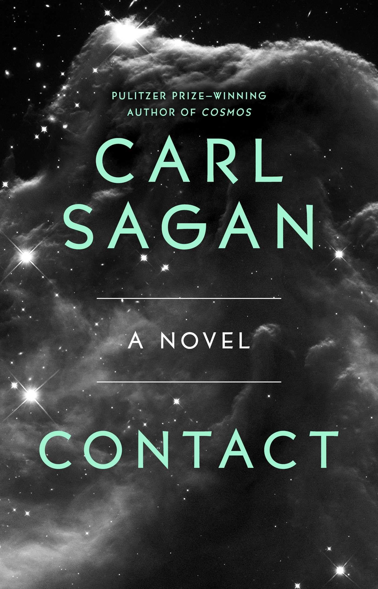
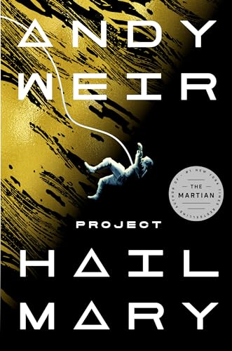
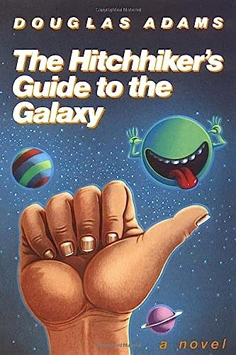
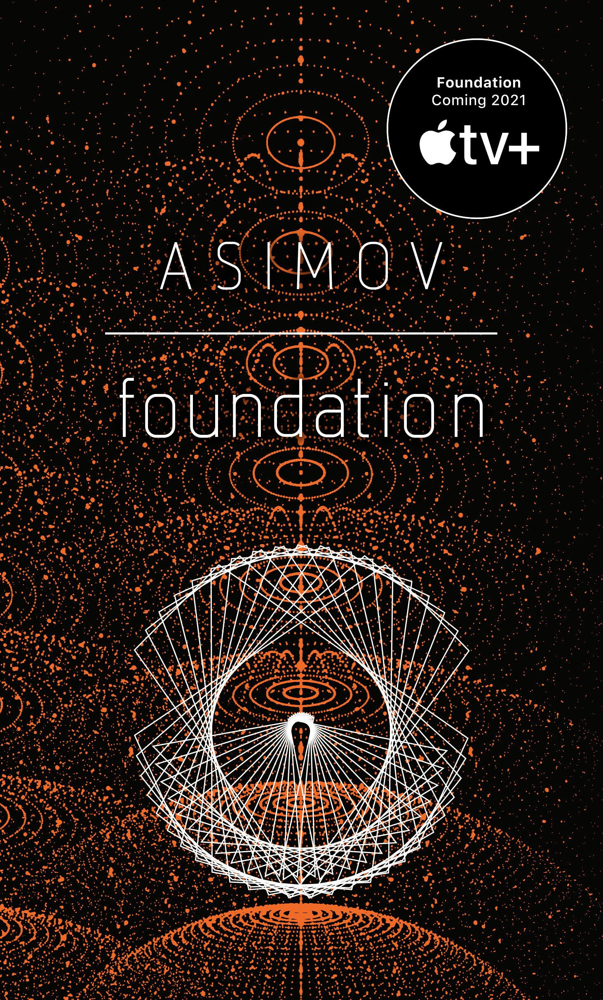
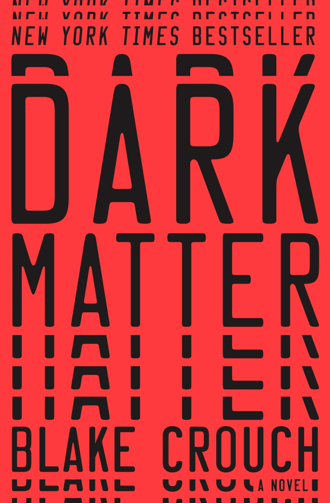
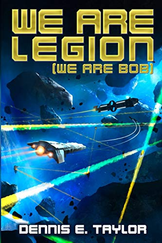

My Sci-Fi Book Collection
This is my curated collection of books that I love. Each item here represents something meaningful to me, whether it's a favorite book, game, album, rock, mineral, tool, art, or memory. This collection showcases how responsive design allows me to adapt my content across all screen sizes.

Contact
Book | 1980 | Carl Sagan
This book is a classic science fiction novel that explores the themes of communication with extraterrestrial life and the impact of such contact on humanity. Sagan's writing is both scientifically grounded and deeply philosophical, making it a thought-provoking read that has stayed with me over the years. I have been a huge fan or Sagan for many years, and I was surprised he was an excellent writer of fiction. It is one of the reasons why I love science fiction so much and started my pursuit of knowledge in science.

Project Hail Mary
Book | 2021 | Andy Weir
This book was a thrilling science fiction novel that kept me on the edge of my seat. Andy Weir's storytelling is engaging, and the scientific accuracy addds a layer of authenticity to the plot. I bought this book during the pandemic on a whim, since I was a huge fan of the Martion movie. Because of its realistic portrayal of space travel and problem-solving, it made me want become an astronaut and explore the universe all over again. I highly recommend the movie adaptatino of this book. Read the book first, though.

The Hitchhiker's Guide to the Galaxy
Book | 1979 | Douglas Adams
This book has been a favorite of mine for many years. Douglas Adams showed me that science fiction can be funny, enteraining, and incredibly inspiring, all at the same time. The history of this book is fantastic. First, it was a radio show, then a book, then a TV Series, then a movie. It has influenced so many other sci-fi tropes and has become a cult classic. I watch all mediums of this story every year and quote it constantly. Definitely my favorite book of all time.

Foundation
Book | 1951 | Isaac Asimov
As I became more interested and invested in science fiction books, I decided to do some research on the history of the genre. I found that Isaac Asimov was one of the most influential science ficton writers of all time. His biggest work, the Foundation series. I was incredibly surprised how completely different his material was from "traditional"science fiction. It was more about the ideas and the characters rather that the action and the adventure. It does not follow a traditional story arc and is confusing at times, but the more you read, understand the characters and the ideas he was trying to convey, the more you appreciate his "new" approach to science fiction. If you decide to read Foundations, keep reading and it eventually click.

Dark Matter
Book | 2016 | Blake Crouch
After reading Project Hail Mary, I started doing research on current sci-fi best sellers. That is how I found Dark Matter. This book keeps you at your edge of your seat and does not hold back. It does not pull any punches and has very dark themes which have you questioning all your decision and life choices. All the what-ifs are played out beautifully and each decision has a devastating consequence that make for a heart pounding finalle. I have now read all of Blake Crouch's books and they are all gut-wrenching thrillers that will keep you reading and wanting more. I highly recommend all of his books, but Dark Matter is my favorite.

We Are Legion (We Are Bob)
Book | 2014 | Dennis E. Taylor
We are Legion (We Are Bob) is my latest science fiction book that I am still currently reading. This book was in the recennt sci-fi best sellers list with Dark Matter. I've been wanting to get this book for so long that a friend gifted it to me recently. I am about halfway through it and it is quickly becoming a new favorite of mine. The Bobiverse, as it is called, is a series of books that follows the adventures of Bob, a human who has been turned into an AI and sent out into space to explore and colonize new worlds. If the entire series is as good as the first book, I will be reading it all. I am excited to see where the story goes and how Bob's adventures unfold.